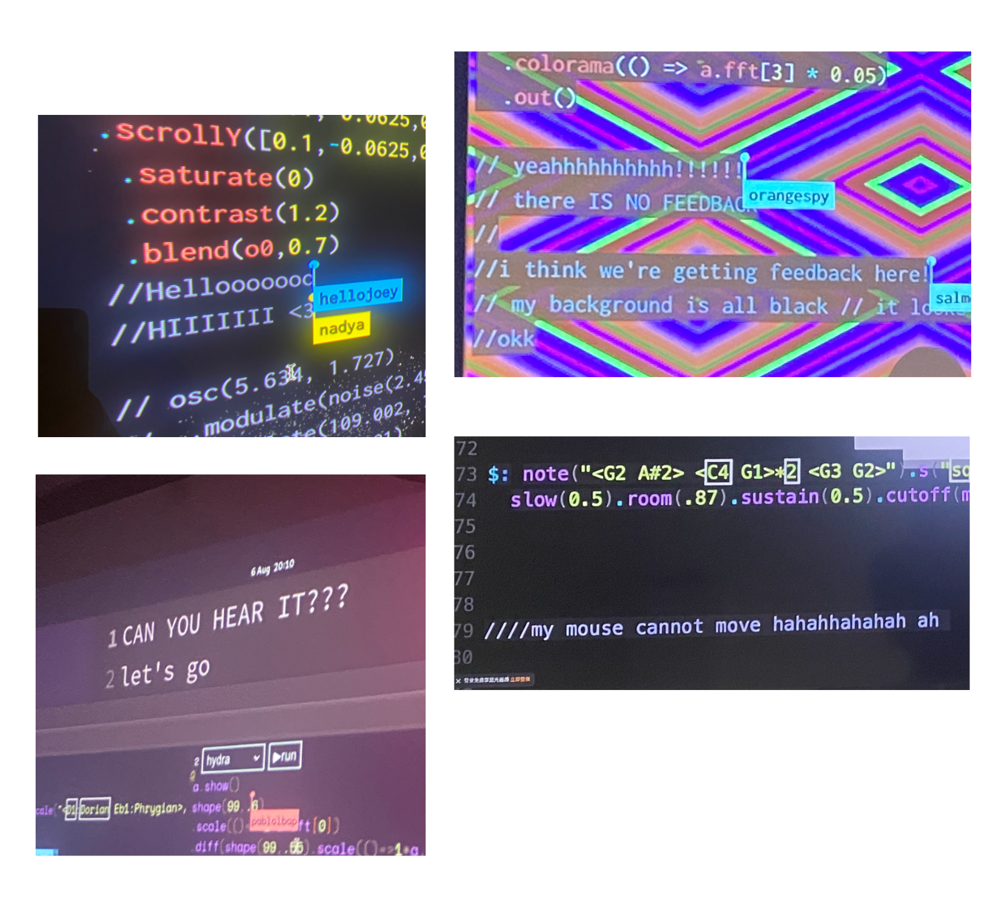
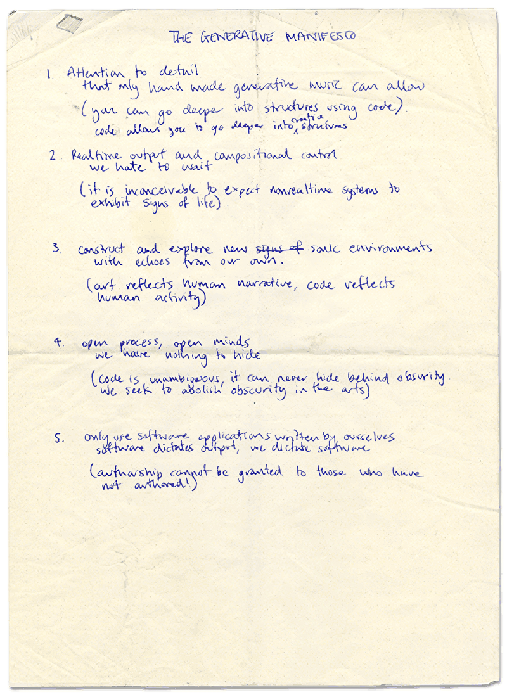
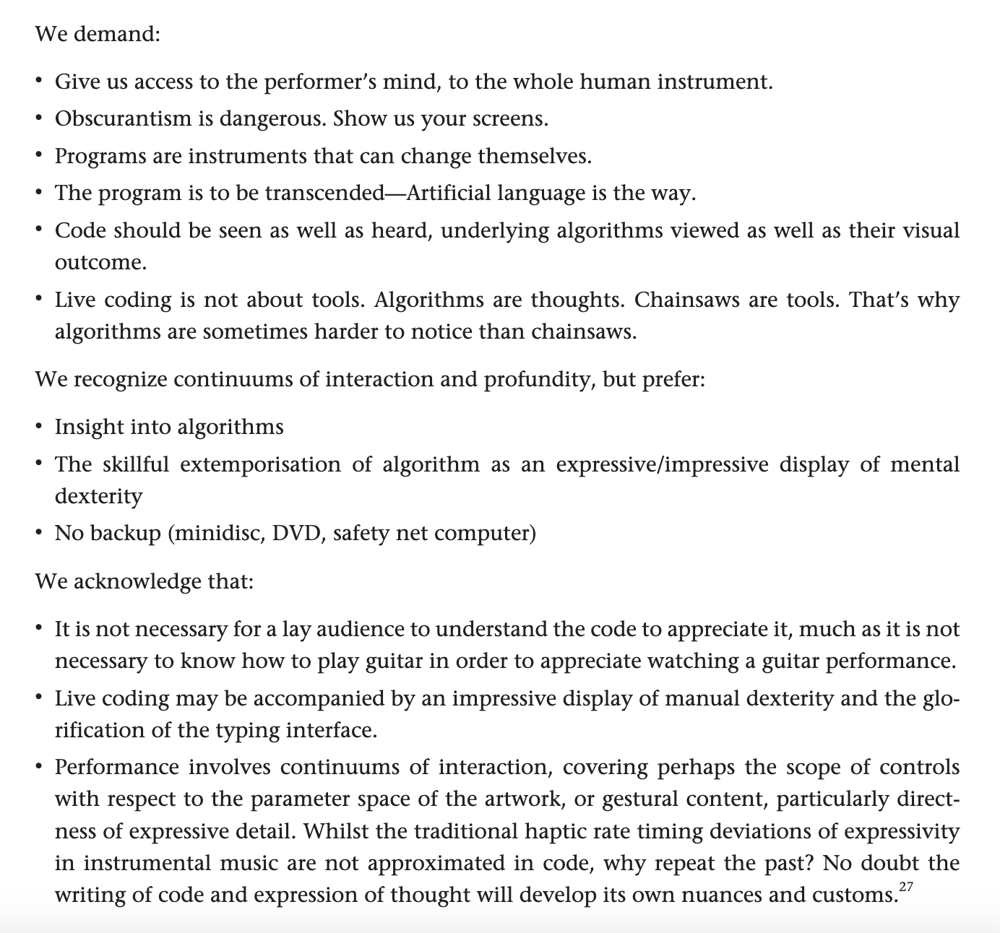

//comment is a performance of approximately 15 minutes in which I write and execute code, mirrored from
my laptop onto a screen visible to the audience. I am always in contact with both the screen and laptop, as a traditional
instrumentalist uses their instrument. I manipulate samples of my own music and voice, fragmenting and restructuring them and
play with them through the act of live, improvisatory coding on my laptop.
The piece hinges itself on comment lines 
The piece departs from a long-standing personal intimacy with computers: a relationship that precedes my understanding. This dynamic is explored through Donna Haraway's Cyborg Manifesto, which troubles the boundary between organism and machine. Haraway writes that "our machines are disturbingly lively, and we ourselves frighteningly inert." This is the condition //comment investigates; the performer is animated by and animating the machine in equal measure. There's something uncomfortably intimate about performing with a laptop. I'm hunched over it, face glowing in screen-light, anticipating for code to compile or break. The audience watches me watching it. We're both waiting for the machine to respond. Galit Wellner calls this a "face-to-quasi-face" encounter. Screens aren't tools we manipulate with our hands like hammers or keyboards, they're entities we address with our faces, like conversation partners. It's not quite human, but it's not quite object either. The laptop becomes something I confess to, argue with, wait for. The screen is a site of alterity: an encounter with an other for both performer and audience. Sherry Turkle's The Second Self extends this into something more uncomfortable: the emotional and psychological attachments people form with computers, the way machines become surfaces for self-reflection. N. Katherine Hayles' How We Became Posthuman provides a further framework for thinking about where the body ends and information begins, a boundary this piece refuses to locate cleanly.
Despite this intimacy, the machine remains fundamentally opaque. I know its rhythms without knowing its workings. Wendy Chun's Programmed Visions is central here. Her argument that software produces an illusion of control and transparency while remaining structurally illegible to its user speaks directly to the condition the piece inhabits. Chun argues that as machines grow more computationally dense, their interfaces paradoxically offer us more to see, producing a situation where 'seeing no longer guarantees knowing.' A website may display its behaviour clearly, but the code libraries, server requests, and compiled dependencies that produce that behaviour remain hidden. Here, multiple systems of legibility operate simultaneously. The poetry is readable as English but unreadable to the compiler. The code is executable by the machine but unreadable to most of the audience. The sound is audible to everyone but cannot be directly inferred from reading the code alone. Visibility does not guarantee understanding; each participant (performer, audience, machine) has partial access to different layers of the work. This is not an abstract concern. Framework, the laptop manufacturer, has built a business model around the literal transparency of hardware: replaceable, visible, documented components as a corrective to an industry designed around opacity and disposability.
Livecoding is a performance practice involving realtime writing, editing and exicution of code, with the process visible to an audience.
Unlike conventional music performance, there is no fixed score; the work is made live through writing, and the writing is the
performance. This practice emerged from a desire to assert creative agency as programmers and to resist the "black-boxed" nature of
artistic and computational process. The Generative Manifesto  